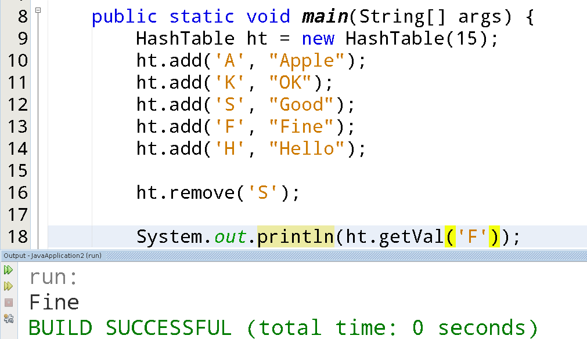

بسم الله الرحمن الرحيم
مقدمة :-
نجد أن في معظم الداتا ستركرز الأخرى يمكن إضافة أو حذف البيانات بسرعة ولكن الوصول للبيانات يكون أصعب كلما زاد عدد العناصر المضافة, على سبيل المثال فإن الوصول لعنصر ما في الـLinkedList يكون بالمرور على كل العناصر المضافة داخل الـLinkedList وحتى إذا قمنا بعمل ترتيب (sort) لعناصر الـLinkedList فإن ذلك يجعل إضافة العنصر عملية تطلب وقتاً أطول لذا تم إبتكار الـHashTable.
ما هي الـHashTable ؟
الـHashTable هي مجرد مصفوفة (array) يمكن إضافة أو إزالة أو البحث عن البيانات في داخلها من خلال Key بدلاً من نظام الـIndex المرقم الذي تستخدمه الـarray ويمكن حساب الـKey من خلال الـhash.
ويختلف الـHashTable عن الـArray في أننا إذا أردنا الوصول إلى عنصر في الـArray فإنه يلزمنا معرفة الـIndex للوصول للعنصر في O(1) بينما في الـHashTable يلزم Key الذي يمكن الـHashTable من الوصول إلى العنصر المطلوب بـO(1) وبحسب هذا الـKey يقوم الـHashTable بتحديد المكان الذي يجب إضافة العنصر فيه فيصبح الوقت اللازم للإضافة O(1).
كيف يعمل الـHastTable ؟
أولاً الإضافة.
يقوم الـHashTable بإضافة عنصر جديد عن طريق حساب الـhash للـKey الخاص بالعنصر ومن ثم يتم استخدام الـhash في إدخال العنصر في المكان المناسب للـHashTable والهاش هي خوارزمية تقوم بحساب نتيجة مختلفة لكل عنصر من العناصر التي يمكن إدخالها في الهاش تيبل.
مثال على عملية الإضافة
للإضافة سيلزم تحديد خوارزمية hashing بحيث تعطي نواتج مختلفة للمدخلات المخلفة, سأفترض أن الخوارزمية هي عملية mod (باقي القسمة) للـKey على 16 بعد تحويل الحروف إلى أرقام وجمعها.
بدءاً من A تساوي 0.

وبعد حساب الرقم المطلوب للـKey الخاص بالمدخل نقوم بوضع المدخل بالمكان المناسب حسب الرقم المدخل.
مثلاً نريد إدخال القيم التالية:-
نقوم بحساب الـhash لكل مدخل كما يلي.
مثال على عملية الوصول للبيانات
إذا أردنا الوصول إلى أي قيمة من القيم الموجودة في الhashtable السابق يجب أن يتوفر لدينا الـKey المناسب, مثلاً نريد الوصول إلى كلمة Hello, نحتاج الـKey المقابل وهو H.
ثم نقوم بحساب الهاش الخاص بـH وهو 7.
وبنفس الطريقة بعد الوصول إلى القيمة يمكننا التعديل عليها أو حذفها وغيرذلك..
يمكن بسهولة الوصول ﻷي عنصر والبحث عن أي عنصر بحسب الـKey الخاص به ولكن إن فقدنا الـKey سيتوجب علينا أن نبحث في كل عناصر الـhashTable وكأنها Array عادية.
والـfunction الخاصة بالهاش التي تم استخدامها بالمثال هي function بسيطة ولا تضمن وجود مشكلة التضارب (Collection) وهي مشكلة تحدث في الـhashTable عند وجود تكرار في الناتج من عملية الـhash للـKey المدخل ويمكن حل هذه المشكلة من خلال استخدام DataStructure آخر مثل HashList بحيث يكون كل عنصر في الـHashTable يؤشر على LinkedList تحتوي على كل القيم التي لها نفس الـhash للـKey.

ويمكن استخدام functions بحيث تسمح للـKeys بأن تكون أكبر من حرف انجليزي واحد مثل قيم الحروف ثم عمل الـmod أو غير ذلك من الـfunctions التي تصل لقيم مختلفة من القيم المدخلة.
تطبيق الـHashTable بالجافا
أولاً نقوم بعمل الـclass باسم HashTable ونضع بداخلها Array التي سنخزن فيها القيم ونسمح للمستخدم بإدخال حجم المدخلات من خلال الـConstructor كما بالصورة التالية.
ثم نريد حساب الدالة hash التي تعطي نتيجة الKey المدخل كما بالصورة.
نبرمج دالة الإضافة لتحسب الهاش وتدخل القيمة بحسب الناتج الخاص بالهاش.
ونبرمج دالة الوصول للقيم بحسب الـKey.
وأخيراً التطبيق في الـMain..
للمزيد قم بالرجوع للصفحة الرئيسية
والسلام عليكم ورحمة الله وبركاته
لا تنسونا من صالح دعائكم